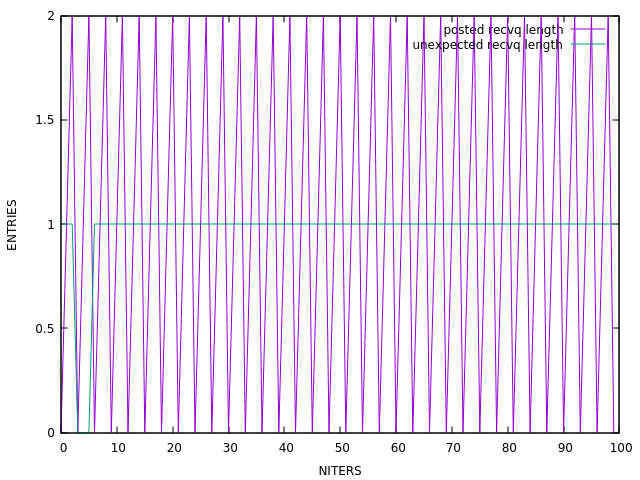
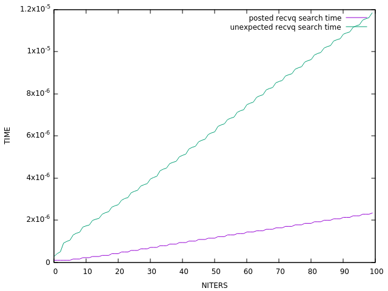
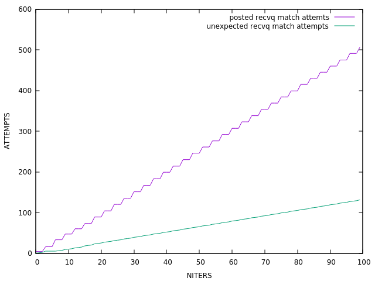

TASK: Incast communication pattern (N=4, iters=100)
DESC:
In general, communication patterns in well performing, scalable HPC
applications, follow nearest neighbor communication patterns (see the
halo3d/halo3d-26 motif). However, in some cases, including some I/O
parallel I/O systems, communication can appear to generate "incast"
traffic. In this situation, multiple nodes all attempt to send data
into a single node causing significant backlog into the network.
The purpose of the incast motif is to represent small collections of
nodes which attempt to simultaneously send messages to the same
remote node. By using the incast motif, benchmarking/simulation of
these patterns can be achieved. These are most often seen as a small
number of nodes performing the pattern.

Elapsed time: 1.1s, Msg/s: 294.8, MBytes/s: 0.2879
UMQ allocated buffer size ~> [0 - 0] avg = 0 (0.000 MBytes)